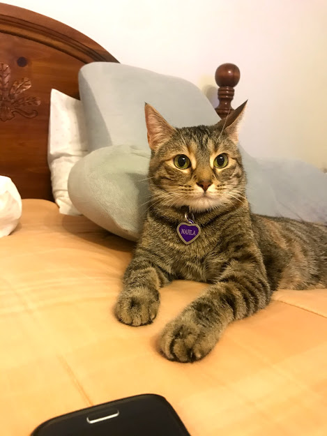

B'Elanna's Portfolio
Intro
My name is B'Elanna Barnes, but my friends like to call me Lanna. I'm from North Little Rock, Arkansas, and am a rising junior at Washington University in St. Louis. I am a computer science major and human-computer interaction minor.
This is me!

Click here to get a random fact about me:
My Background
I've been in Arkansas my whole life, but my dad is from St. Louis and my mom is from New Orleans. My parents and I are basically by ourselves in Arkansas, so I never developed a strong relationship with my family members. As a result, I heavily relied on my relationships with my friends and their families because those are the closest people I could have. In other words, I really consider my friends as family. I love animals, but as far as pets, I've only had a goldfish-his name was Cheeto and he lived for four years-and I currently have a cat named Nahla. I always joke that Nahla is my child because I spoil and baby her so much. She's just so cute!
This is Nahla. She thinks she rules the house. If we're being honest, she kind of does.
I grew up a preacher's kid, so I was in church regularly. My parents were very strict as well, so I didn't get to do much as a kid. I'd consider myself an introverted extrovert, because while I like making new friends, I'm shy to start conversations sometimes. That's something I like about CompSci. I can still be introverted and get work done either by myself or on a team.
Academics/Career
Speaking of CompSci, I always get asked what I want to do as a career after I graduate. I'm not sure. I tend to change my mind a lot which I think is okay since CS is so versatile, but I've been trying to take classes at school in different focus areas. For example, I'm taking Video Game Programming in the Fall which I think will be really fun. I've also been interested in cybersecurity for a while, so I might decide to explore that as well. Overall, I really want to "dip my toes" in different specialties of CS so I can get a feel for what I like or not.
I haven't had any internships yet, but some tech-related classes that I've taken so far are:
| Course Name | When It was Taken |
| Intro to Computer Science | Fall 2018 |
| First-Year Engineering Seminar | Fall 2018 |
| Intro to Computer Engineering | Spring 2019 |
| Seminar: Intro to Computer Science | Spring 2019 |
| Logic and Discrete Mathematics | Fall 2019 |
| Data Structures and Algorithms | Fall 2019 |
| Web Development | Spring 2020 |
| Programming Tools and Techniques | Spring 2020 |
| Seminar: Data Structures and Algorithms | Spring 2020 |
Projects
Some projects that I've worked on include:
- An interactive game of Battleship in Java
- Wiring and programming an Arduino to resemble a washing machine
- An interactive game of Tetris in Java
Social Media
You can check out my LinkedIn profile here, GitHub profile here, and Instagram accounthere.